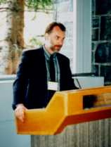
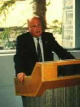

Presentation of J. Tuzo Wilson Medal to Petr Vanicek (at right) by Roy D. Hyndman,
then President of the CGU. Citation was given by Michael R. Craymer standing at left.
 It is a special privilege to be able to give this citation for Petr Vanicek, who has given a great deal to the world of geodesy and the CGU in particular. It is particularly special for me as Petr has been my mentor for some 15 years.
For those who don't know Petr, I will first give some background information. Petr hails from the Czech Republic where he obtained his engineering degree in surveying from the Czech Technical University in 1959 and later his Ph.D. in Mathematical Physics from the Czech Academy of Science in 1968. In 1967, he and his young family had already made their way to England where he worked as a scientist in the British civil service doing research in geophysics and oceanography.
Fortunately for Canada, he came to this country a couple of years later in 1969 on an NRC post doctoral fellowship. At that time this was a program designed to attract foreign scientists to Canada. This enabled him to spend a few years working at the Geodetic Survey in the then Surveys and Mapping Branch of Energy, Mines and Resources. We are certainly glad Petr took up this opportunity. Then in 1971, he accepted a professorship at the University of New Brunswick in the Department of Surveying Engineering (now the Dept. of Geodesy and Geomatics Engineering), where he has been ever since. In 1974 he and his family became Canadian citizens and in 1981 he became a registered member of the Association of Professional Engineers of New Brunswick.
Havning authored over 300 papers, there is simply not enough time here to go into details about Petr's prolific professional life. However, I do want to take the time to mention some of the more important highlights of his career, including other recognitions of his achievements. In typical Canadian fashion, most of these have come from outside Canada.
One of the first of Petr's important contributions to geodesy, and the field of numerical analysis in general, was his Ph.D. dissertation on the development of least squares spectral analysis for unevenly spaced data series. First published in 1969, he is still gaining wide recognition for this work, as in the second edition of Press et al.'s popular reference book "Numerical Recipes." No less impressive are Petr's other technical achievements. For example, he completed the first map of contemporary vertical crustal movements for Canada based on geodetic data. More recently he has also developed new techniques for four dimensional positioning and geoid determination.
In recognition of his scientific achievements, Petr became one of only a handful of geodesists worldwide to receive a Senior Visiting Scientist award from the US Academy of Science. He used the award to spend time during the late 1970's at the National Geodesy Survey, where he worked on, among other things, tidal corrections to geodetic quantities, sea-tide loading, correlations in levelling, and his book "Geodesy: The Concepts" (see below).
Since the mid-1980's, Petr has received a number of of other prestigious awards and recognitions. For example, in 1986 he was invited to South Africa in 1986 on a research fellowship to report on the state of geodesy in that country. The next year he received a fellowship of the AGU -- being one of only 15 geodesists (only 5 foreigners) to receive the honour. Not to be undone by the Americans, the Alexander von Humboldt Foundation of Germany awarded him with the Distinguished Senior Scientist award. This is a particularly significant honour, as he is the first and only such Canadian to receive this prestigious award, which is used to foster scientific cooperation with German scientists.
Most recently, in 1993, Petr earned his Doctoral of Science degree from the Czech Academy of Sciences, based mainly on his significant technical papers in geodesy and numerical analysis. For those not familiar with the D.Sc., it is a state degree that, in many European countries including the Czech Republic, is awarded for internationally pioneering research.
Petr has also attracted more than a few millions of dollars in grants and contracts, most going to support his students, research assistants and visiting colleagues. As one of the research staff in the late 1980's, I can probably account for a couple of hundred thousand of this myself.
Petr's career is not only remarkable for his research achievements, but also for his contributions to education. Almost 40 graduate students from all five continents and numerous cultural backgrounds have had the benefit of his tutelage, including yours truly. All would testify to his ability to instill clear thinking, originality and a hard work ethic. This he constantly demonstrated to all by example. In recognition of his teaching abilities, Petr has received more than one UNB Merit Award for excellence in teaching and research.
Petr has also been very generous to all this students and colleagues, both professionally and personally. I think Galo Carrera summed this up nicely in his nomination letter: "When economic factors became a barrier to prevent a student from completing a program, he always found a way, sometimes even out of his own pocket, to assist in what he calls 'wise intellectual investments.' He always made sure that a scientific mind was not wasted due to lack of opportunities."
In addition to his numerous lecture notes, Petr's greatest contribution to education is undoubtedly his text book, "Geodesy: The Concepts." Despite being more than 14 years old now, it is still the most comprehensive book on geodesy and is the standard text used for both undergraduate and graduate courses in geodesy throughout the world. This being reinforced by the fact that it has been translated into several different languages.
I should also make a special note of the 1980's when Petr was a full professor not only at UNB, but also at the University of Toronto in Survey Science. Moreover, at the U of T he held cross-appointments in Survey Science, Civil Engineering and Geophysics. During this period he looked after graduate students at both the U of T and UNB. It was during his time in Toronto that he took myself and others under his wing as we began our careers in geodesy.
Finally, many senior members of the CGU know Petr from another side -- that of his significant contributions to the independence of the Union itself. Not only did he serve as president from 1987 to 1989, but it was primarily his determination and political skill that revitalized the Union in the late 1980's into the independent society it is today, representing geophysicists of all "stripes." I think most at that time would agree that this would not likely have happened without Petr's commitment and efforts.
It was also his idea to hold the 1987 IUGG assembly in Vancouver on the 30th anniversary of the last time it was held in Canada (Toronto). Although the Americans were the first to submit their invitation to hold the assembly, it was again Petr's political skill as part of a 3-member Canadian delegation that convinced them to recall their invitation so that Canada could host it in Vancouver.
After all these achievements, international awards and recognition, it's now time we officially honour him ourselves. My co-sponsors Rod Blais, Adrian Camfield, Galo Carrera, Spiros Pagiatakis, Doug Smylie, David Strangway, and I are proud to nominate Petr Vanicek as the first geodesist to receive the J. Tuzo Wilson Medal. Congratulations Petr, you certainly deserve it!
Michael R. Craymer
May 9, 1996
 Thank you, Mike, for your very generous words. It is indeed a very great honour for me to have been selected the J. Tuzo Wilson medalist for 1996, and I must thank the Canadian Geophysical Union Awards Committee for judging me a worthy recipient.
I remember clearly Tuzo Wilson's acceptance speech 18 years ago, when he was presented with the first Wilson medal. He said, and I quote from memory: "I have been introduced here as one of the members of the first graduating class [in geophysics at the Trinity College, Toronto in 1930]. This is not quite correct; I was the graduating class." He must have felt pretty lonely, professionally speaking, after his graduation, and I could sympathize with him entirely, as I found myself in a very similar situation when I came to Canada some 27 years ago.
Geodesists were in a very short supply in Canada at that time and consequently, the "name recognition" for geodesy was very low; whenever I was asked to declare my profession, the best reaction I could hope for was: "ah, a geologist, eh". Even the late Director General of the late Surveys and Mapping Branch of the late Department of Energy, Mines and Resources, my first boss in Canada, who was supposed to know all about geodesy, called us geodesists "the keepers of the grid."
Moreover, to most geophysicists, we, the geodesists, are too superficial (meaning interested only in the surface of the earth). True, and we are also usually completely ignorant of things geological as well as physical. We do not use any "dancing elephants" to chart the lithosphere, we do not argue convincingly that the earth creeps at depth, we do not solve problems that give infinitely many solutions. Surely, to those who do, we must appear somewhat benign, dull, and nit-picking in our eternal hunt for the last millimetre.
Our professional standing in Canada has much improved, however, during the past few decades, at least as far as our numbers are concerned and as far as international recognition goes. And it is really on behalf of this new generation of Canadian geodesists, who have brought this improvement about, that I accept the medal, with great pride and trepidation.
As CGU has played a significant role in my professional development, it would be impossible for me to resist this occasion to cast a look back at the history of this august organization. CGU was inaugurated in 1973 Ñ I hope I have got the year right Ñ after the dissolution of National Research Council Associate Committee on Geodesy and Geophysics. No more public funds would be made available for any geophysical/geodetic communion, and we had to start looking after our own needs by ourselves.
The CGU was then conceived, first as a joint division of the Geological Association of Canada and the Canadian Association of Physicists. This scheme did not sit well with some of us, who felt we were neither geologists nor physicists. Yet, most of us were convinced that the only promising future for CGU was in attracting other geophysical families to join with us to build a stronger geophysical tribe. The only solution to this dilemma that we could think of was to become independent while maintaining strong ties with our two adoptive "parent" associations. An amicable separation was then negotiated, and CGU became independent at the tender age of 15.
Shortly after the proclamation of independence, the hydrologists joined CGU to become a very active and involved arm of the Union. While this is very gratifying, CGU should not stop there; we should continue working hard to attract other Canadian geophysicists, fluid, applied, fiery, geometrical, whatever their stripe happens to be, into our Union. At the same time, we have to compete with our bigger brotherly organizations, the American Geophysical Union and the European Geophysical Society, for the loyalty of Canadian geophysicists. This, by itself is a daunting task but I am hopeful that with so much brain power and good will assembled within CGU, we can find a satisfactory solution.
I wish to end by thanking my friends, Rod Blais, Galo Carrera, Adrian Camfield, Alfred Kleusberg, Richard Langley, Spiros Pagiatakis, Doug Smiley, David Strangway, and of course Mike Craymer once again, for thinking of me at the time of nomination.
Petr Vanicek
May 9, 1996